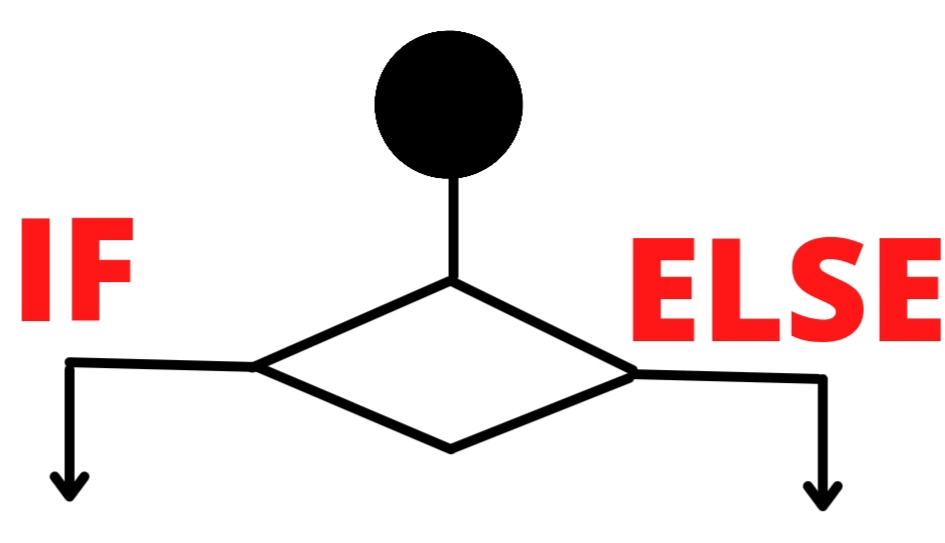
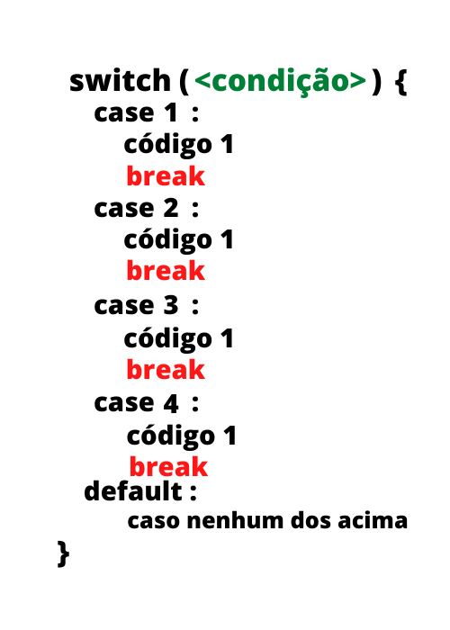
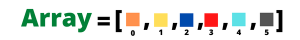

A linguagem Javascript , conhecida como "a linguagem web" , é interpretada e baseada em objetos . Apesar de ser a linguagem da web , a linguagem também é usada em vários outros ambientes sem browser, tais como node.js, Apache CouchDB e Adobe Acrobat.
Observação : Javascript não é o mesmo que java.
Janelas
alert
O elemento "Alert" é uma caixa de de diálogo que mostra uma mensagem na tela do usuário.
window.alert('Olá , mundo !')
confirm
O elemento "Confirm" é bem parecido com o Alert , mas ele funciona de forma diferente , pois o usuário pode escolher entre duas opções : CONFIRMA ou CANCELA . Além disso , o programador ainda pode armazenar a escolha do usuário em uma variável .
window.confirm('Escolha entre : Confirmar ou Cancelar .')
O usuário pode armazenar o valor do Confirm da seguinte maneira :
var escolha = window.confirm('Escolha entre : Confirmar ou Cancelar .')
window.alert(escolha)
Dependendo da escolha do usuário , a variável escolha pode assumir os valores lógicos true ou false .
prompt
Já o elemento "Prompt" é capaz de receber do usuário uma String . Veja o exemplo abaixo :
window.prompt('Digite seu nome : ')
Assim como o Confirm , o Prompt também pode der armazenado em uma variável . Veja o exemplo abaixo :
var nome = window.prompt('Digite seu nome : ')
window.alert(nome)
Proposições
O que são :
Proposições são sentença declarativa , ou seja , podem ser afirmações ou negações . Isto significa que podem assumir dois valores : true (1) ou false (0) .
Exemplo 1 : O alface é verde .
O exemplo 1 é uma proposição válida , pois o tomate é verde . A proposição assume valor true .
Exemplo 2 : Hoje está chuvendo .
A exemplo 2 também é uma proposição válida e pode assumir true ou false , dependendo do clima da sua cidade (chuva ou não) .
Exemplo 3 : A feijoada não é um prato típico brasileiro .
O exemplo 3 também é uma proposição válida , pois a feijoada é um prato típico do Brasil . A proposição assume valor false .
Exemplo 4 : O passaro voa .
O exemplo 4 também é um exemplo válido , pois passaros normamente voam . Note que a proposição pode assumir true ou false , pois existem passaros que não voam .
Exemplo 5 : Que horas são ?
O exemplo 5 não é uma proposição válida , pois a sentença não é uma afirmação ou negação , mas sim uma interrogação .
Lógica proposicional :
A lógica proposicional é basicamente a comparação entre valores lógicos , isto é , entre Proposições . Os elementos básicos da lógica proposicional são o And , OR e NOT . Segue a explicação de cada um abaixo :
OR
A porta lógica OR faz a comparação entre dois valores e retornará valor true quando ao menos um desses valores for true . Veja a tabela abixo para mais esclarecimentos .
valor 1
valo2
comparação
1
1
1
1
0
1
0
1
1
0
0
0
AND
A porta AND faz a comparação entre dois valores e retornará true somente quanto os dois valores comparados forem iguais à true , é basicamente o inverso da porta OR . Tente comparar as tabelas das portas AND e OR
valor 1
valo2
comparação
1
1
1
1
0
0
0
1
0
0
0
0
NOT
Já a porta NOT não faz uma comparação , mas sim uma inversão , isto é , se o valor for true , ele será convertido para false e vice-versa . Veja a tabela abaixo para maior prendizagem .
Estruturas Condicionais
O que são :
Estruturas condicionais , como o if , else e else if são estruturas de controle que determinam se determinados eventos podem e vão ocorrer . De forma mais clara , se uma dada condição for satisfeita , um bloco de código poderá ocorrer . Veja exemplos práticos do dia a dia :
Irei comprar pão , se eu estiver com dinheiro .
Coloque ração para o cachorro se não haver ração na tigela .
Se o pneu do carro furou , paro e troco, senão podemos seguir viagem .
Como você pode ver , estruturas condicionais estão bastante presente em nossa vida e , no geral , são bem fáceis .
If
A tecla if é , basicamente uma estrutura de controle , pois ela determina se um dado evento vai ocorrer .
Exemplo : Se o sinal está verde , atravesse a avenida . Senão , pare e aguarde .

Note que na imagem acima a estrutura if poderia checar se o sinal está verde e , consequentemente a parada do carro. Já o
else
não seria necessário ser usado , pois o if que determinaria a parada do carro .
var corDoSinal = window.prompt('Qual a cor do sinal ?')
if (corDoSinal == 'vermelho'){
window.alert('Pare o carro !')
}
Else
O else complementa o if e é usado quando necessitamos que algo ocorra quando o if resulta em false . Veja o exemplo abaixo :
Se eu tiver dinheiro , compro uma pizza . Senão , fico com fome hoje à noite .

Note que caso eu tenha dinheiro , a estrutura if retornará true e poderei comprar a pizza . Caso eu não tenha dinheiro , não poderei comprar a pizza , e ficarei com fome .
var dinheiro = window.prompt('Tenho dinheiro sim ou não ?')
if (dinheiro == 'sim'){
window.alert('Compro a pizza !')
} else {
window.alert('Fico com fome !')
}
Else If
O else if é usado quando precisamos de mais de duas estruturas de controle . Veja o exemplo abaixo :
Exemplo : Se eu estiver com até R$25 , consigo comprar uma pizza . Se eu estiver com mais de R$25 , comprarei uma pizza e um refrigerante . Caso contrário , ficarei com fome .
Note que caso eu tenha menos de vinte reais , corresponde à estrutura if . Caso eu tenha mais de vinte e cinco reais , corresponde à estrutura eslse if e caso eu não tenha nada corresponde à estrutura else .

Observação : você pode usar quantos else if's achar necessário .
var dinheiro = window.prompt('Quanto dinheiro tenho em reais ?')
if (dinheiro < 20){
window.alert('Compro a pizza !')
} else if (dinheiro > 25) {
window.alert('Compro a pizza e o refrigerante !')
} else {
window.alert('Fico com fome !')
}
Switch
Como funciona :
O switch funciona como uma estrutura condicional , assim como o if , mas pode substituir o uso de grandes estruturas if ; elif ... else .
O switch recebe um parametro e faz uma sequência de estrutura similares às if .Veja o exemplo abaixo :

Note que no switch , os cases funcionam como if . Você deve usar break apos cada case para evitar que sejam execultados mais de um case .
Veja um exemplo de switch pelo código abaixo :
var numero = window.prompt('Digite um número de 0 a 4 : ')
switch( numero ) {
case 1:
window.alert('Quarto')
break
case 2:
window.alert('Segundo')
break
case 3:
window.alert('Terceiro')
break
case 4:
window.alert('Quarto')
break
default :
window.alert('Eu disse um número entre 0 e 4 !')
arrays
O que são ?
Podemos definir arrays (também conhecidos como vetores) de forma básica como uma coleção de variáveis . veja a imagem abaixo :

Cada quadradinho é um elemento do array e possui uma proposição ligada à ele . Por exemplo , a posição do gradrado cor salmão é 0 , a posição do quadrado amarelo é 1 e assim sucessivamente .
Como criar :
Para definir um array você pode usar o new array ou simplesmente usar [] . Veja o código abaixo para maoir aprendizado :
var array1 = new array() ;
var array2 = [] ;
Como adicionar elementos :
push --> a estrutura push adiciona um elemento ao fim do array . Exemplo : array.push(2)
Por posição --> você também pode adicionar elementos por posição usando array [posição] .
unshift --> O unshift adiciona um elemento ao início do array . Para isso , use array.unshift() .
Como remover elementos :
pop --> O pop remove o ultimo elemento do array e , para usá-lo , você só precisa digitar array.pop() .
shift --> Diferente do pop , o shift remove o primeiro elemento do array e , para usá-lo , você só precisa digitar array.shift() .
splice --> O splice pode remover elemento de qualquer posição do array . Basta usar array.splice(posição,quantidade) .
outras funções :
indexOf --> A função indexOf retorna se um elemento está no array . Se o elemento estiver no array , a função retornará a posição do elemento , caso contrário retorna -1 . Para isso , use array.indexOf(elemento procurado) .
sort --> A função sort ordena o array em ordem crescente . Para isso , use array.sort() .
reverse --> A função reverse inverte os elementos do array . Para isso , use array.reverse() .
concate --> A função concate une arrays . Para isso , use array1.concate(array2) .
Como manipular datas :
Usando Get :
O método get pode ser ultilizada para "pegar" as datas e é usado da seguinte forma :
Primeiramente , você deve criar uma variável do tipo new Date() . Veja o exemplo abaixo :
var data = new Date() ;
Após isso ,você pode usar os métodos :
| Método |
Descrição |
Exemplo |
| getDay() |
Retorna o dia da semana |
data.getDay() |
| getDate() |
Retorna o dia do mês |
data.getDate() |
| getMonth() |
Retorna o mês do ano |
data.getMonth() |
| getFullYear() |
Retorna o ano atual |
data.getFullYear() |
| getHours() |
Retorna a hora atual |
data.getHours() |
| getMinutes() |
Retorna o minuto atual |
data.getMinutes() |
| getSeconds() |
Retorna os segundos atuais |
data.getSeconds() |
| toLocaleDateString() |
Retorna a data no formato xx/yy/zzzz |
data.toLocaleDateString() |
| toLocaleString() |
Retorna a data e hora |
data.toLocaleString() |
Usando Set :
Já com o set você pode "modificar" uma data . Veja o exmplo :
var data = new Date(1988,2,4,13,45,12 ) //ano,mês,dia,hora,minuto,segundo
ou
var data = new Date() ;
var modificar = new Date() ;
modificar.setFullYear(data.getFullYear()+2)
Match
O que faz?
Pesquisa em uma string por um caractere ou um conjunto deles . Retorna o elemento em forma de array . Veja o exemplo abaixo :
var frase = 'Eu amo muito javascript .' ;
var palavra = frase.match('amo') ;
window.alert(palavra)
modificadores :
i Faz a busca pelo elemento com case sensitive .
g Faz a busca por todos os elementos procurados .
var palavra = frase.match(/amo/i)
var palavra = frase.match(/amo/g)
Note para pesquisar pelo elemento usando modificadores você tem que usar "/" .
Pesquisa por vetores :
Para fazer uma Pesquisa por vetores usando o método match , usamos "[]" . Veja o exemplo
var palavra = frase.match(/[oae]/ig)
var palavra = frase.match(/[a-y]/ig)
Pesquisa por exceção:
Para fazer uma pesquisa por exceção usamos "^". Veja o exemplo :
var palavra = frase.match(/[^aeiou]/ig)
search
O método search retorna a posição de um ou mais caractere determinado como parâmetro .
A saída do método é a posição do caractere determinado . Se o caractere não estiver na string , a saída será -1.
Exemplo :
var frase = "Eu amo programar em javascript."
var resultado = frase.search('amo')
window. alert(resultado )
replace
O método replace substitui um ou mais caracteres em uma string .
O método recebe dois parâmetros : a palavra à ser substituida e a substituição .
Exemplo :
var frase = "Eu amo programar em javascript."
var resultado = frase.replace('javascript' , 'python')
window. alert(resultado )
charAt
O método charAt retorna o caractere da posição passada como parâmetro.
Exemplo :
var frase = "Eu amo programar em javascript."
var resultado = frase.charAt(7)
window. alert(resultado )
charCodeAt
Já o método charCodeAt retorna o código do caractere da posição passada .
Exemplo :
var frase = "Eu amo programar em javascript."
var resultado = frase.charCodeAt(7)
window. alert(resultado )
concat
O método concat faz a junção de duas strings .
Exemplo :
var frase1 = "Eu amo programar "
var frase2 = "em javascript ."
var resultado = frase1.concat(frase2)
window. alert(resultado )
indexOf
O método indexOf retorna a primeira posição inicial do caractere passado como parâmetro.
Exemplo :
var frase = "Eu amo programar em javascript."
var resultado = frase.indexOf("amo")
window. alert(resultado )
lastIndexOf
Assim como o método indexOf , O método lastIndexOf retorna a primeira posição do caractere passado como parâmetro , mas a string é iterada de trás para frente .
Exemplo :
var frase = "Eu amo programar em javascript."
var resultado = frase.lastIndexOf("amo")
window. alert(resultado )
localeCompare
O méttodo localeCompare compara duas strings e , se forem iguais retorna 0 ,se não , retorna -1 .
Exemplo :
var frase = "Eu amo programar em javascript."
var resultado = frase.localeCompare("Eu amo programar em python")
window. alert(resultado )
slice
O método slice corta uma string . O método recebe doi parâmetros : a posição do início e do fim do corte à ser realizado .
Exemplo :
var frase = "Eu amo programar em javascript."
var resultado = frase.slice(3 ,6)
window. alert(resultado )
split
O método split separa os elementos de uma string e retorna uma lista . O método só recebe um parâmetro : o caractere que servirá de separador .
Exemplo :
var frase = "Eu amo programar em javascript."
var resultado = frase.split(" ")
window. alert(resultado )
substr
O método substr é bem parecido com o slice , mas ao invés de início e fim como parâmetros , ele recebe início e tamanho do corte .
Exemplo :
var frase = "Eu amo programar em javascript."
var resultado = frase.( )
window. alert(resultado )
toUpperCase e toLowerCase
O método toUpperCase transforma a string para maiúsculo . Já o método toLowerCase transforma a String para minúsculo .
Exemplo :
var frase = "Eu amo programar em javascript."
var resultado1 = frase.toUpperCase( )
var resultado2 = frase.toLowerCase( )
window. alert(resultado1)
window. alert(resultado2)
toString
O método toString ,basicamente , transforma qualquer caractere em string. Mas você também pode usá-lo como conversor de bases numéricas usando: toString(2) para converter um número para binário , toString(8) para octal e toString(16) para hexadecimal .
Exemplo :
var frase = 4
var resultado = frase.toString( )
window. alert(resultado )
trim
O método trim remove os espços antes e depois da string .
Exemplo :
var frase = " Eu amo programar em javascript. "
var resultado = frase.trim( )
window. alert(resultado )